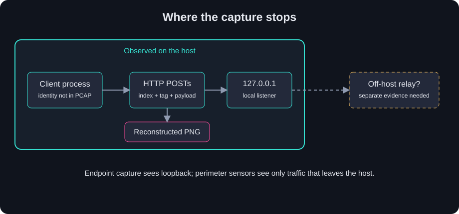

Abacus / Cyber Ops / CTF Writeups / Forensics / The Image in a Thousand Local Uploads
The Image in a Thousand Local Uploads
A thousand POSTs looked noisy until I found a PNG header eight bytes into the first body.
Summary
The challenge. Reconstruct the artifact in repeated local HTTP uploads and identify the protected subject shown in it.
What I did. I separated keep-alive requests, tested the eight-byte application header, ordered bodies by index, checked the recovered PNG, and inspected its rendered pixels.
The result. The challenge account reports 1,000 matching chunks, a valid PNG, and a visible repeated watermark that yielded the answer.
The limit. The matching capture and carved image were unavailable for this publication review. I tested the published tools against an invented PCAP, not against the challenge traffic or submission service.
Case details
| Field | Value |
|---|---|
| Category | Network Forensics / PCAP |
| Difficulty | Medium |
| Tags | pcap, http, reassembly, custom-framing, sha-256, png-carving, exfiltration, t1030 |
| Status | Solved in the challenge account |
| Material | Host packet capture of HTTP requests to a local listener |
| Goal | Reconstruct the uploaded image and identify its subject |
| Reported result | 1,000 indexed chunks passed the four-byte SHA-256 prefix check; a PNG carried a visible repeated watermark |
| Independently checked here | A synthetic PCAP with split headers, keep-alive, retransmission, three framed POSTs, PNG CRCs, and negative parser cases |
| Boundary | The challenge capture, carved image, answer, and platform receipt were unavailable for replay |
Defensive proofs of concept for adapting this case to real environments: browse the tools on GitHub and the invented fixtures.
At-a-Glance Attack Chain
The capture establishes the local upload leg. The story proposes a later relay out of the host, but that second hop was outside the observed traffic. I keep the boundary visible in the diagram.
flowchart LR
A[Image bytes] --> B[Indexed pieces]
B --> C[SHA-256 prefix in each body]
C --> D[HTTP POST to 127.0.0.1:8080]
D --> E[Local listener observed]
E -. unobserved .-> F[Possible off-host relay]
1. Problem Statement and Threat Scenario
I was given a packet capture from the host of a protected asset. The conspicuous traffic was a long run of plaintext HTTP requests to a loopback listener. The challenge asked what was being moved and what it revealed about the protectee. The story cast the local listener as a staging point for later exfiltration. What I could analyze in the capture was narrower: the host-to-local-listener leg, its request bodies, and the image reconstructed from them.
The local address matters. An egress firewall would not ordinarily see packets that stay on 127.0.0.1. A host capture can. I needed to separate the repeated HTTP messages, work out the extra bytes in each body, and rebuild the file before I could read the clue. The useful content was not in a network header.
2. Techniques, Tooling, and Actions Taken
I began with a packet and port inventory. The recorded pass found TCP loopback traffic to port 8080 and HTTP request lines. A Scapy attempt ran into an IPv6-routing problem in the analysis environment, so the work switched to dpkt. That detour did not change the evidence. It did remind me to inspect the capture before committing to a library.
My first request count was low. I had treated a TCP flow as one HTTP request, but these connections used keep-alive. The same flow carried successive requests. I walked the reassembled client bytes, found each \r\n\r\n header boundary, read Content-Length, and advanced by the declared body length. The naive first-line-per-flow approach had missed about 30% of the requests. The bounded offline parser implements that split and rejects gaps or ambiguous HTTP framing instead of silently filling them.
The first upload body had eight bytes before a PNG signature. Across bodies, the first four bytes looked like a big-endian index: 0, 1, 2, and onward. I tried MD5, SHA-1, SHA-256, SHA-512, BLAKE2, CRC32, and Adler-32 against the next four bytes. The leading four bytes of SHA-256(payload) matched in the reported solve. I then checked every recorded body, sorted the payloads by index, and reconstructed the file. The account reports 1,000 distinct indices, all 1,000 short hash checks passing, and a PNG with an intact IEND.
I checked textual PNG chunks first. The iTXt content was ordinary Adobe XMP material and did not carry the answer. Rendering the image exposed a repeated vertical watermark beside the stock-photo subject. That was the actual clue. The image and answer are not included here, so I cannot independently confirm the reported content from the current files.
There was one more useful negative result. A later question assumed some chunk had arrived after a higher-numbered one. The recorded review checked request-line first byte, body first byte, and body last byte as three definitions of arrival. Each returned zero inversions across the 1,000 reported chunks. Without the matching capture, I cannot rerun that conclusion now. I keep it as a reported negative rather than inventing an index to satisfy the question.
3. Tooling and Scripts
3.1 PCAP inventory
The first pass counted transport and destination-port shape before parsing any application body. That is where port 8080 and the loopback scope emerged. In the public lab, pcap_http_reassemble.py reads classic PCAP files with Ethernet or raw IPv4, groups client-to-listener TCP payloads, and reports captured data packets and client flows. It does not assume that any local POST reached an external destination.
3.2 HTTP request splitter (keep-alive aware)
The original failure was simple: one TCP flow can contain several HTTP/1.1 requests. The request splitter works from sequence-checked TCP bytes and uses each request's Content-Length. It rejects an incomplete body, duplicate header, or unsupported Transfer-Encoding. RFC 9112 describes both persistent connections and message framing. The invented capture splits headers across packets, carries three POSTs on one flow, and repeats one TCP segment byte for byte. The parser finds three requests and one flow without counting the retransmission twice.
3.3 Custom-framing reassembler with integrity check
The reported body format is [uint32 big-endian index][SHA-256(payload) first four bytes][payload]. That is an application header, not the HTTP Content-Length. The reassembler checks every short tag, rejects duplicate or missing indices, and joins the payloads from zero upward. It then checks PNG chunk boundaries and CRCs. This makes a wrong ordering, missing TCP byte, or corrupted chunk visible instead of producing a plausible-looking but incomplete image. The real 1,000-chunk result remains reported; the published test uses three invented chunks.
3.4 PNG metadata extractor
The source path enumerated tEXt, zTXt, and iTXt. The reported iTXt chunk led only to default XMP. The public parser lists PNG chunk types and counts textual chunks without displaying their contents. It validates IHDR, IDAT, IEND, file bounds, and CRCs first. I would only decode or decompress a text chunk under explicit size limits, because a malformed image is untrusted input. The iTXt detour was useful even though it was not where the answer lived.
3.5 Fallback: visual watermark inspection
I finally rendered the carved PNG and read the repeated vertical text at native resolution. A scaled thumbnail is useful for orientation, but tiny lettering can disappear there. On unfamiliar images I would keep the original immutable, render a bounded preview, and crop only the region I need. The synthetic fixture generator makes a harmless one-pixel PNG for tests. It contains no watermark or challenge content.
4. Concept Explanation
4.1 Chunked exfiltration with integrity-tagged framing
Each body carries a position and a short check over its payload. The four-byte index tells a receiver where to put the piece. The first four bytes of SHA-256 catch accidental corruption and help confirm that I understood the framing. A random accidental collision has roughly one chance in 2^32 for one fixed comparison, assuming uniform digest output. The tag is not authenticated: anyone able to change a payload can compute a new prefix. It cannot establish who sent the bytes or whether a malicious sender altered them.
4.2 Why HTTP-over-loopback as a staging primitive
An implant can hand bytes to a local process over HTTP and let that other process decide what happens next. The capture supports the handoff to a local listener. It does not show a remote relay, tunnel, DNS channel, cloud SDK, or outbound connection carrying this image. In a real investigation I would join host process, socket, and egress records before calling the full chain exfiltration. A perimeter sensor alone could miss the local request entirely.
4.3 Why visible watermarking instead of metadata steganography
The reported answer was printed into the image pixels. My metadata pass did not find it. I had to look at the rendered artifact. That is an easy lesson to forget when a file has XMP and the analyst has a drawer full of steganography tools. The challenge gives no evidence of LSB or DCT hiding; the visible mark was enough.
5. Exploit/Analysis Mechanics
The local HTTP messages expose the uploaded bytes. A strict TCP reconstruction supplies a contiguous client stream; Content-Length separates its requests. The first eight bytes of each selected body disclose an index and a SHA-256 prefix. Matching all short tags makes the framing hypothesis strong, though it does not authenticate a sender. Sorting payloads by index yields the reported PNG. Valid PNG chunk lengths and CRCs check the container, and rendering shows the clue.
The source's example splitter appended TCP payloads as they appeared and could yield a short body if the capture ended early. That would be risky on reordered, retransmitted, or incomplete traffic. The published parser uses TCP sequence numbers, tolerates identical retransmission, rejects conflicting overlap and gaps, and refuses incomplete HTTP or PNG data. It supports a bounded subset of classic PCAP and HTTP/1.1, as the guide explains. A failure means the case needs a fuller parser or closer inspection; it does not prove the traffic was benign.
6. Lessons Learned (Practitioner Perspective)
The first good move was finding the regular shape: many small POSTs to one path. The wrong move was equating a TCP connection with an HTTP request. Once I separated the requests, the body format became visible. Testing candidate hashes on several bodies was faster and safer than building a reassembler around an untested guess.
I also had to stop looking for the answer in metadata after the XMP lead went cold. The pixels contained the clue. Finally, the order question was a reminder that a question's premise can be wrong. The recorded three-way timestamp check found no inversion. I would rather report that negative with its method than manufacture the number the question seemed to demand.
The strongest limit is the missing capture. I can run a meaningful synthetic reproduction of keep-alive splitting, frame validation, PNG reconstruction, and negative cases. I cannot use that reproduction to claim a fresh verification of the 1,000 real bodies, watermark, or final answer.
7. Extrapolation
For an incident responder, this workflow is a small version of protocol reconstruction. Start with who spoke to whom and which sensor saw it. Rebuild transport bytes conservatively, split application messages, test a candidate header on the full set, and then inspect the resulting file as a file. Preserve the packet capture and any carved image separately with hashes and handling notes.
For a hunt, the durable pattern is repeated similar-size POSTs from a process or host to one path, especially on a local listener that should not be present for that host role. User-agent strings can help prioritize, but legitimate software uses curl and python-requests too. I would correlate a burst with process identity, approved service inventory, and any later outbound flow. The offline burst hunter works on normalized endpoint HTTP metadata and produces review leads without storing request bodies.
8. Reusable Tools, Scripts, and Artifacts
8.1 Triage decision tree
Identify the capture type and link layer. Count protocols and endpoints. If HTTP is present, reassemble each client TCP flow and split every request; then group by method, path, and body size. For repeated binary POSTs, inspect several body prefixes. Test any index or integrity hypothesis across the whole set before carving. The lab guide lists the supported capture formats and explicit stop conditions.
8.2 Reusable hash-sweep helper
The recorded sweep compared MD5, SHA-1, SHA-256, SHA-512, BLAKE2, CRC32, and Adler-32 prefixes and suffixes against the four mystery bytes. The all-chunk SHA-256-prefix match selected the right interpretation. In the published analyzer, that conclusion is an explicit per-frame gate. I would repeat the broader sweep on another case rather than assume this family always uses SHA-256. A four-byte match on one body alone would be weak; agreement across 1,000 independent bodies is much stronger.
8.3 PNG carving and metadata extraction
The PNG is recovered from the ordered payloads, then parsed from its signature through IEND. The parser validates each chunk CRC and reports dimensions and text-chunk count. The sample capture reconstructs an invented 1-by-1 PNG. I kept output optional; an analyst can choose a new path with --output, and the tool refuses to overwrite an existing file. The challenge's large image and watermark are not in this fixture.
8.4 Solve-pattern checklist (custom-framed HTTP exfil)
I would record the capture hash and scope, isolate HTTP-bearing flows, reject TCP gaps, split every keep-alive request, identify the upload path, inspect body prefixes, validate candidate tags, order by application index, check container structure, and render the output. I would then ask which evidence actually shows off-host transfer. The synthetic tests cover valid reconstruction, a bad tag, a TCP gap and conflicting overlap, malformed HTTP, a bad PNG CRC, arrival-order logic, and detection near misses.
9. Framework Mapping
9.1 ATT&CK
T1030 Data Transfer Size Limits is a useful behavior analogy for the many similarly sized pieces. The local POSTs are observed staging, so I would only mark the technique as confirmed exfiltration after finding the outbound hop. T1071.001 Web Protocols concerns command-and-control communication; HTTP on localhost alone does not prove a C2 channel. T1048.003 likewise needs evidence of unencrypted exfiltration beyond the host. The image does not prove T1113 Screen Capture as its collection method, and an index plus hash is framing rather than T1132 Data Encoding of C2 data. I keep those distinctions instead of turning every plausible upstream step into an observation.
9.2 D3FEND (counterpart defenses)
Network Traffic Analysis fits the capture review, and Protocol Metadata Anomaly Detection fits a baseline of repeated methods, paths, sizes, and intervals. Those techniques describe possible defensive work. The challenge did not establish that any organization deployed them.
9.3 CAPEC
The listed CAPEC interception and message-identifier patterns are not close enough to this observed upload to help a defender. I would describe the eight-byte frame directly instead. There is no demonstrated application vulnerability or named campaign that would make a CAPEC label more precise than the packet evidence.
9.4 Frameworks omitted
OWASP, ATLAS, CVSS, EPSS, and KEV do not add a finding here. This is a packet reconstruction exercise, without a demonstrated web vulnerability, AI system, or CVE. STRIDE Information Disclosure can be used in a future design review of a relay architecture, but the local capture alone does not document that architecture.
10. Threat Intel and Standards Integration
10.1 STIX 2.1 representation
I would keep the exact frame layout and any verified artifact hash in a protected case record. A generic POST /upload on 8080, a programmatic user agent, or an ordinary PNG hash is weak shared intelligence without a confirmed external destination or repeat observation. The placeholder STIX objects in the case notes were illustrative, not a valid export ready for a TIP or TAXII server. I did not publish a bundle that could be mistaken for operational intelligence.
10.2 STIG and CIS
The source points to host firewall, audit logging, and network monitoring baselines. Those are sound areas to review. A specific STIG finding needs a verified product, version, scope, and rule text before it becomes an assessment claim. CIS Controls v8 includes 8.5 for detailed audit logs and 13.6 for network flow logs. Flow logs on a network device cannot see host-only loopback traffic; endpoint telemetry is needed for this leg.
11. Controls Mapping and Mitigation Realization
11.1 Standards mapping
NIST SP 800-53 SC-7 helps frame network boundaries, SI-4 monitoring, AU-2/AU-12 logging, and IR-4 incident handling. SC-8 addresses transmission confidentiality and integrity when policy requires them. Plaintext loopback HTTP made this exercise readable, but the capture does not by itself prove a policy violation or that TLS would stop an already executing implant. NIST SP 800-61 Rev. 3 is the current response guidance; the older Rev. 2 citation in my notes is superseded.
11.2 Mitigation realization
I would inventory approved local listeners, monitor process-to-loopback connections where the endpoint sensor supports it, and hunt for repeated uploads that do not fit the host's role. Egress controls matter for any actual relay, but I need separate evidence of that hop. A host firewall policy may constrain an unexpected listener; it should be tested against legitimate local development, agents, and IPC. For response, retain the original capture, identify the client and listener processes, collect their binaries and launch history, examine any external connections, then decide whether to contain them. A bare port number is not enough to close a case.
12. Indicators, Artifacts, and Detection Engineering
12.1 IOCs (sanitized, illustrative)
The local pattern was POST /upload to port 8080, binary bodies, an index in bytes 0-3, a SHA-256 payload prefix in bytes 4-7, and a reconstructed PNG. Those are case descriptors, not a durable external IOC. The exact carved-file hash stays in protected case notes because the challenge image is unavailable here. A generic Adobe XMP packet and BaseHTTP server banner would be low-fidelity leads. None establishes the identity of a relay or exfil destination.
12.2 YARA - implant working-directory artifact
A file rule looking for a zero index followed by a PNG signature at offset eight could find a saved first-frame body. It would not match traffic that was never written as a file, and it could match a benign test fixture. The sample PCAP gives a safe positive for the structure, while the analyzer checks every body and its hash. I did not package the source's unvalidated YARA rule as a production detector.
12.3 YARA - Python implant collector script (heuristic)
The combination of requests, hashlib, a big-endian four-byte index, and /upload is a plausible source-code hunt. The capture does not include the collector script. The same strings can occur in tutorials and legitimate upload code, so this is a hypothesis for an authorized code corpus, not an observed implant signature. I would demand an actual sample and benign comparison set before deploying it.
12.4 Sigma - programmatic-UA HTTP POST from endpoint
The experimental Sigma candidate finds one programmatic HTTP POST for host-role review. It cannot express the burst or prove exfiltration by itself. A perimeter proxy will not see the loopback leg; the rule needs a compatible endpoint HTTP sensor for that traffic, or it can be applied to a separately observed forwarded hop. The file passed a local pySigma parse. It was not converted to a production backend or tuned against real telemetry.
12.5 Sigma - local listener anomaly (Sysmon)
The source proposed a Sysmon Event ID 3 rule for an unexpected local listener. Microsoft's Sysmon event reference identifies Event 3 as a network connection event. It does not establish that a process bound a listening socket. I did not publish that rule. A real listener hunt needs a socket bind/listen data source or periodic endpoint socket inventory joined to process identity and an approved-service list.
12.6 SIEM queries
The KQL and SPL templates group normalized HTTP events by host, destination, path, minute, and body-size spread. The offline hunt uses a rolling one-minute window and the same fields. Fixed time bins can split a burst, so analysts must test boundary behavior. These examples require an endpoint HTTP sensor for local traffic. They were not run in Splunk or Sentinel.
12.7 Log source and data pipeline requirements
The endpoint must supply HTTP method, target, byte count, time, and process or host identity for the local leg. Process creation and connection telemetry can help attribute the client, but network connection records alone do not carry the request body or listener-bind state. A network egress sensor sees only an actual off-host hop. Normalize service approvals from a maintained inventory and protect any captured image or request bodies as evidence. The lab guide gives exact schema and parser limits.
12.8 Detection engineering notes
The invented event fixture has one alerting burst, an approved build-agent case, a GET, and a variable-size near miss. Six local test groups cover that logic and the packet parser's corrupt, incomplete, and retransmitted cases. This proves the code's behavior on those examples. It does not measure false positives on a real fleet or make a three-request threshold suitable for production. Similar upload sizes are a review lead. External transfer needs separate evidence.
13. Visual Artifact
The solve flow above tracks the reported reconstruction. The visibility diagram marks where the packet evidence stops: the host capture reaches a local listener, and any off-host relay requires another source. That boundary also decides which detector can see which event.


14. References
- RFC 9112, HTTP/1.1, especially message length and persistent connections.
- MITRE ATT&CK T1030, T1071.001, T1048.003, T1113, and T1132 for mapping boundaries.
- MITRE D3FEND Network Traffic Analysis and Protocol Metadata Anomaly Detection.
- Microsoft Sysmon event reference for Event ID 3 scope.
- NIST SP 800-61 Rev. 3 and CIS Controls v8.
- PNG specification, W3C for chunk layout and CRC checks.